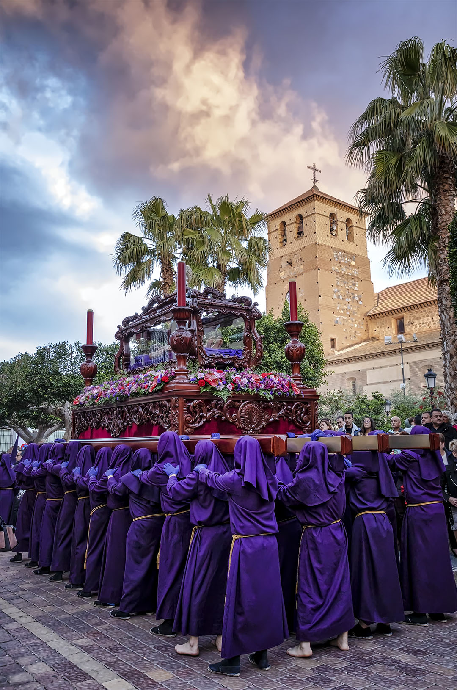
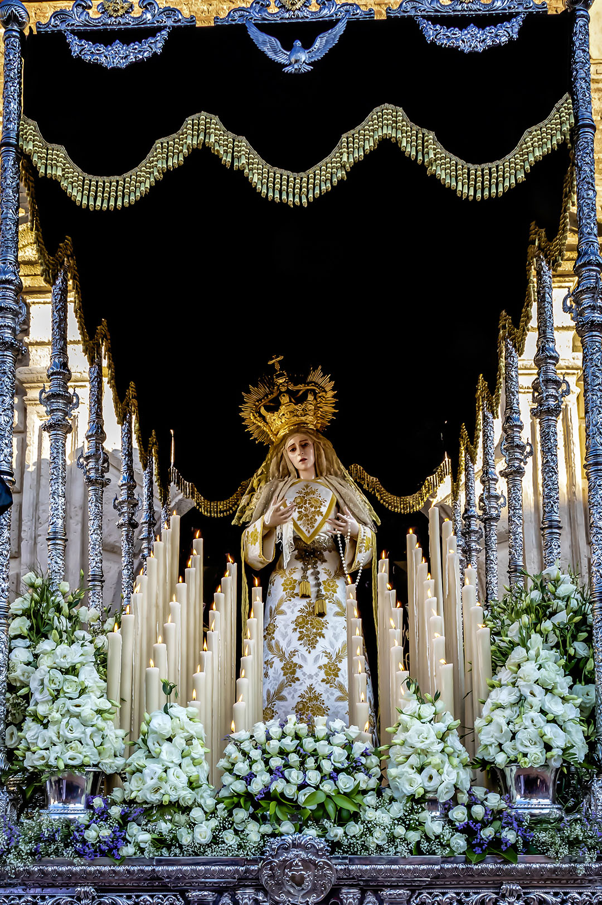

VIERNES SANTO
Procesión Oficial del Santo Entierro de Nuestro Señor Jesucristo.
Ilustre Archicofradía de Nuestro Padre Jesús Nazareno, Santo Sepulcro y Santa Cruz Hermandad Juvenil del Santísimo Cristo de la Buena Muerte y Nuestra Señora de la Esperanza.
Tras la alegría del Encuentro lleva la seriedad del Entierro. Austeridad, recogimiento, silencio, que nos evoca a formas de ver la Semana Santa muy distintas a la nuestra; que nos lleva a la dura Castilla y su manera de vivir la Pasión y Muerte de Nuestro Señor. Retumbar de timbales que anuncian la Buena Muerte, música de oración que llama al silencio anuncia el paso ante nuestros ojos del Señor muerto. Su sufrimiento ha terminado, descansa en paz durante tres días sentado a la derecha de su Padre. Ha cumplido su misión, una muy dolorosa misión; ¿alguien podría imaginarse el sufrimiento que significa morir en una cruz después de tan brutal castigo? Pero ese era el plan, para volver venciendo a la muerte y restaurar en bien todo el mal de la humanidad. La Pasión de Nuestro Padre Jesús Nazareno ha acabado, ahora empieza la Pascua que da sentido a nuestra fe, porque nuestro Dios no es un Dios muerto.
Acompañamiento musical: Santísimo Cristo de la Buena Muerte: Sección de Percusión "Silemtium Nazareno".
SALIDA PROCESIONAL: 20:00 h.
ITINERARIO:Glorieta de España. c/. Rodríguez Carmona, c/. Arcos, el. Rafael Ortega, c/. Terrera, Avda. San Sebastián, c/. Dr. Gómez Campana. Plaza Jaime Calatrava, Avda. Andalucía, plaza del Pueblo, Avda. Virgen de las Angustias, cf. La Torre, c/. Miguel Solves, Plaza José Bellver, c/. Manuel de Góngora, el. Jardines c/. Rodríguez Carmona, Glorieta de España y entrada al Templo.
Procesión de la Soledad.
Hermandad de Nuestro Padre Jesús de la Misericordia en el beso de Judas, Santísimo Cristo de la Entrega, Nuestra Señora de los Dolores, San Juan Evangelista y María Santísima de la Caridad en su Soledad.
 MARÍA SANTÍSIMA DE LA CARIDAD EN SU SOLEDAD:Obra realizada por el maestro imaginero gaditano D. Luis González Rey en el año 2018 en madera de cedro y policromada al óleo con una alzada de 1.70 metros. Presenta una virgen de gesto apenado y contenido, con la boca entreabierta y leve giro con inclinación de la cabeza hacia la izquierda, con las manos entrelazadas, si bien la nueva imagen presenta líneas y perfiles más suavizados. Se dota de ojos de cristal y pestañas naturales, así como de la policromía característica del autor, obteniéndose una obra de singular belleza y gran espiritualidad.
Todo el ajuar mariano ha sido diseñado y confeccionado bajo la dirección del vestidor de la Hermandad Don Gabriel Martín Gázquez en la localidad sevillana de Alcalá de Guadaira. La corona que luce la virgen es de metal dorado y ha sido realizada en los talleres sevillanos de Orfebrería Castilleja. La imagen, el ajuar mariano y la corona han sido donadas a la Hermandad por un grupo de hermanos y fieles devotos fruto del amor y cariño que profesan a sus Titulares.
SALIDA PROCESIONAL: 00:30 h.
ITINERARIO:Glorieta de España, Avda. Andalucía, c/. Dr. Artés, c/. Rafael Ortega, c/. Terrera, Avda. San Sebastián, c/. Dr. Gómez Campana, Plaza Jaime Calatrava, Avda. Andalucía, plaza del Pueblo, Avda. Virgen de las Angustias, c/. La Torre, c/. Miguel Solves, Plaza José Bellver. c/. Manuel de Góngora, Glorieta de España y entrada al Templo.